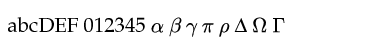
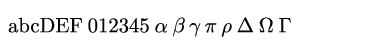
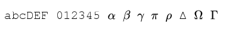

Styling
Figure
Axes and Axis
TBD:
- note that x2axis/y2axis revert to xaxis/yaxis (GLE restriction)
- cannot have xaxis off and x2axis on, same for y
- if xticks happens after grid it will disable, should use xticks! if want to change position
- ticks angle are in degrees, rotation is clockwise (e.g. 45)
LineStyle
TBD:
- default to smooth if more than 20 points.
Fonts
The parent font of the figure can be defined by passing it as argument to the constructor Figure(font=...). In non-LaTeX mode, different fonts can be selected for sub-elements (e.g. axis label); otherwise the parent font is used throughout.
Non-LaTeX mode
In non-tex mode, a number of fonts and font-variants are supported, see the appendix for the full list.
The table below is a subset of the supported fonts that are likely to be among the most useful. Note that not all fonts are supported for the SVG output.
You can specify the font you want using its ID or its name (replacing spaces by dashes) for instance:
f = Figure(font="texmr")
f2 = Figure(font="computer-modern-roman")are both valid way of defining the parent font.
Note 1: most fonts only have basic symbol support (typically Greek letters are fine) but will fail for more "exotic" symbols like ∫ or ∞. Use the LaTeX mode for those. Note 2: the fonts that start with tex are tex-like fonts but do not switch on the LaTeX mode.
| ID | Name | Looks like | SVG |
|---|---|---|---|
| psh | helvetica |  | ✘ |
| pspr | palatino roman |  | ✘ |
| texcmr | computer modern roman |  | ✔ |
| texcmss | computer modern sans serif | ✔ | |
| texcmtt | computer modern sans serif | ✔ | |
| arial8 | arial | ✘ | |
| rm | roman |  | ✘ |
| ss | sans serif | ✘ | |
| tt | typewriter |  | ✘ |
LaTeX mode
In LaTeX mode, you're free to specify your own preamble which can include font packages to define how things should look. Anything that works with PdfLaTeX should work. Below is an example where we use sourcesanspro:
preamble = texpreamble = tex"""
\usepackage[T1]{fontenc}
\usepackage[default]{sourcesanspro}
\usepackage{amssymb}
"""
f = Figure(texpreamble=preamble)Note: specifying a tex preamble is sufficient to switch to LaTeX mode.